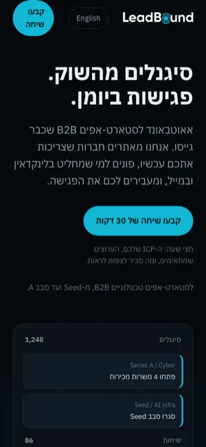
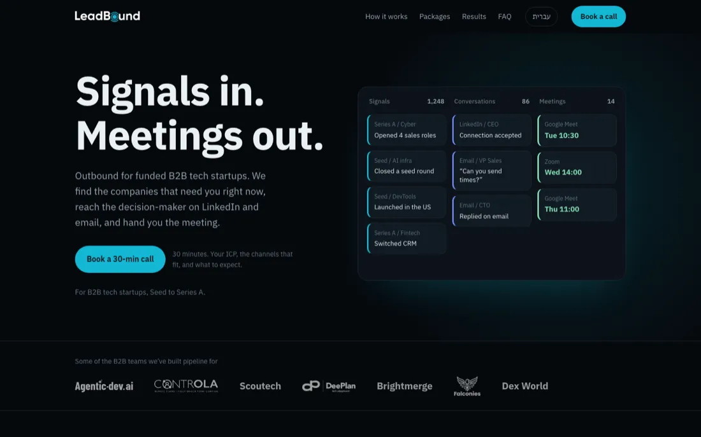
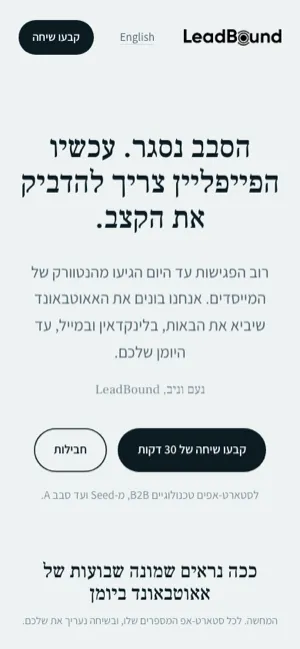
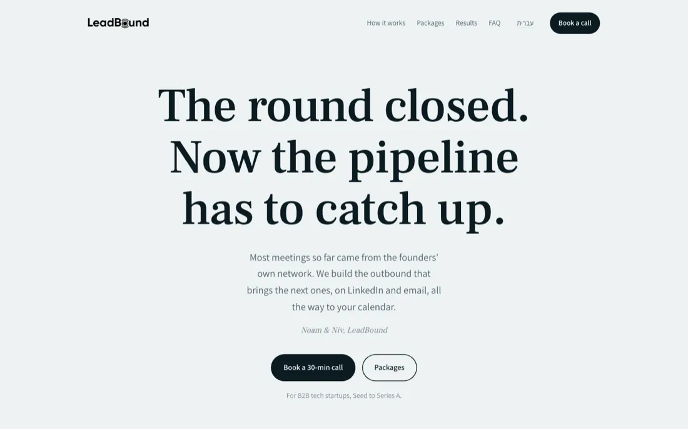
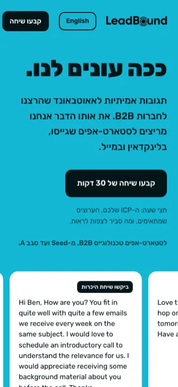
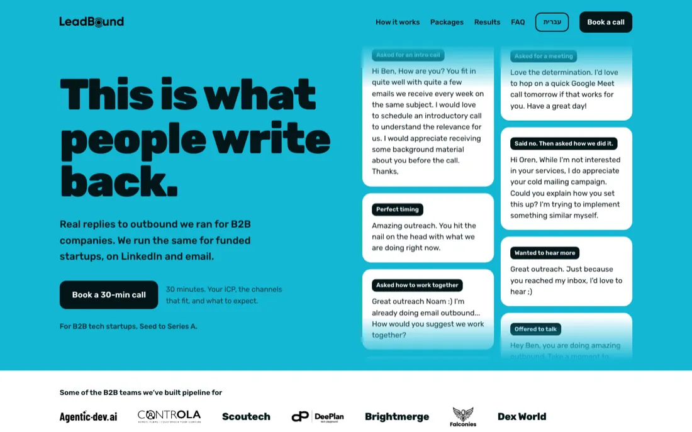
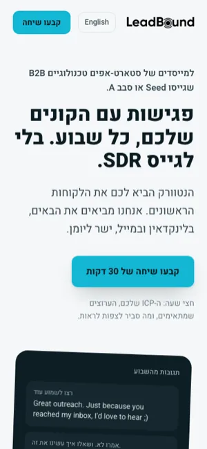
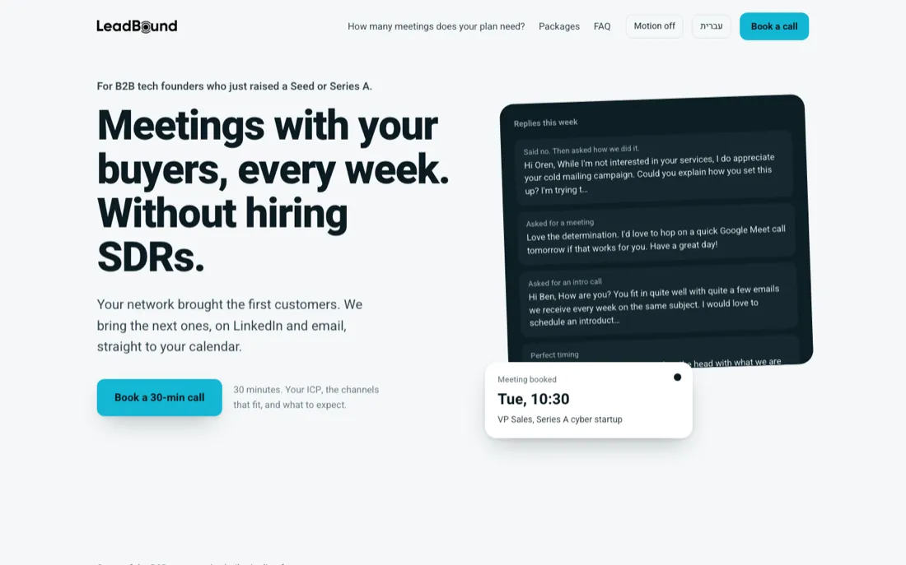

אותו תוכן, ארבעה כיוונים שונים בשפה של LeadBound. ברירת המחדל באנגלית, ובכל דף יש כפתור מעבר לעברית. כל הכפתורים פותחים את היומן של LeadBound. מומלץ להסתכל גם מהטלפון.
כהה, טכני, הכי קרוב לאתר הראשי. ה"רגע" שלו: לוח חי בהירו שמראה סיגנלים שהופכים לשיחות ושיחות שהופכות לפגישות.


בהיר, עם פונט סריף, בטון של מכתב ממייסדים למייסדים. ה"רגע" שלו: יומן של שמונה שבועות שמתמלא בפגישות תוך כדי גלילה, לפי לקוח אמיתי (17 פגישות ב-60 יום).


פוסטר בטורקיז עם טיפוגרפיה כבדה. ההוכחה היא ההירו: התגובות האמיתיות שקיבלנו זזות בשני טורים, ליד הכותרת "This is what people write back".


נבנתה לפי חמשת הכללים מהסרטון של Nate Herk. המסך הראשון עונה על שלוש שאלות: למי זה מיועד, מה מקבלים ומה עושים עכשיו. צבע ההדגשה (טורקיז) נמצא רק על כפתורים, ביחס של 60-30-10. בהירו יש שלוש שכבות: תיבת תגובות אמיתיות ברקע, הטקסט באמצע, והכפתור וכרטיס "נקבעה פגישה" מלפנים.

